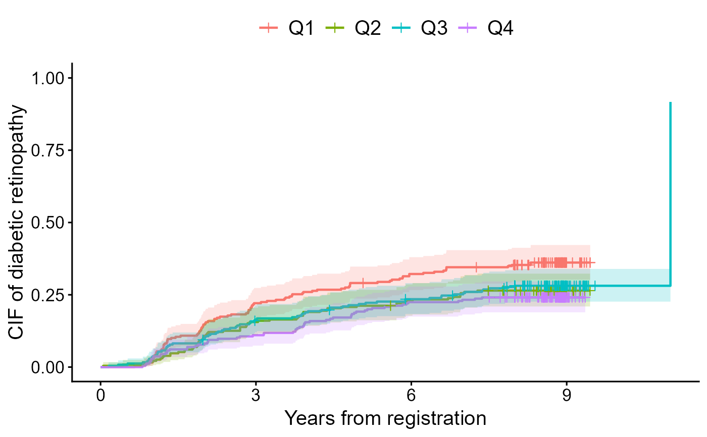

Calculate the Kaplan-Meier estimator and the Aalen-Johansen estimator
Source:R/cifcurve-reporting.R, R/cifcurve.R
cifcurve.RdCore estimation routine that computes a survfit-compatible object
from a formula + data interface (Event() or survival::Surv() on
the LHS, and a stratification variable on the RHS if necessary).
The back-end C++ routine supports both weighted and stratified data. Use this
when you want numbers only (e.g. estimates, SEs, CIs and influence functions)
and will plot it yourself.
Usage
# S3 method for class 'cifcurve'
summary(object, ...)
cifcurve(
formula,
data,
weights = NULL,
n.risk.type = "weighted",
subset.condition = NULL,
na.action = na.omit,
outcome.type = NULL,
time.point = NULL,
null.hypothesis = NULL,
code.event1 = 1,
code.event2 = 2,
code.censoring = 0,
error = NULL,
conf.type = "arcsine-square root",
conf.int = 0.95,
report.influence.function = FALSE,
report.survfit.std.err = FALSE,
engine = "calculateAJ_Rcpp",
prob.bound = 1e-07,
conf.dist = c("normal", "t"),
df.method = c("deletion", "equal")
)Arguments
- object
A fitted
cifcurveobject to summarize.- ...
Arguments passed to
summary.survfit(), includingtimes.- formula
A model formula specifying the time-to-event outcome on the LHS (typically
Event(time, status)orsurvival::Surv(time, status)) and, optionally, a stratification variable on the RHS.Surv()responses must be right-censored. Unlikecifplot(), this function does not accept a fitted survfit object.- data
A data frame containing variables in the formula.
- weights
Optional name of the weight variable in
data. Weights must be nonnegative.- n.risk.type
Character string; one of
"weighted","unweighted", or"ess". Controls which risk set size is returned in$n.riskwithout affecting estimates or SEs (default"weighted").- subset.condition
Optional character string giving a logical condition to subset
data(defaultNULL).- na.action
A function specifying the action to take on missing values (default
na.omit).- outcome.type
Character string specifying the type of time-to-event outcome. One of
"survival"(Kaplan-Meier) or"competing-risk"(Aalen-Johansen). IfNULL(default), the function automatically infers the outcome type from the data: if the event variable has more than two unique levels,"competing-risk"is assumed; otherwise,"survival"is used. You can also use abbreviations such as"S"or"C". An explicit"competing-risk"remains in effect when a cause is absent in the analysis data. Mixed or ambiguous inputs (e.g.,c("S", "C")) trigger automatic detection based on the event coding.- time.point
Optional finite, non-negative time for a one-sided normal approximation test when
null.hypothesisis specified. The test returns a missing p-value for strata with no positive-weight follow-up at this time.- null.hypothesis
Optional null value for the survival probability or cumulative incidence at
time.point. Foroutcome.type = "survival", the one-sided alternative is that the observed survival probability is higher than the null value. Foroutcome.type = "competing-risk", the one-sided alternative is that the observed CIF forcode.event1is lower than the null value. A scalar value is recycled across strata. A named numeric vector can be used to specify stratum-specific null values.- code.event1
Integer code of the event of interest (default
1).- code.event2
Integer code of the competing risk (default
2).- code.censoring
Integer code of censoring (default
0).- error
Character string specifying the method for SEs and CIs used internally. For
"survival"without weights, choose one of"greenwood"(default),"tsiatis","if", or"fay". For"competing-risk"without weights, choose one of"delta"(default),"aalen","if", or"fay". Weighted analysis defaults to influence-function SEs ("if"). The C++ curve engine also supports"fay", a Fay–Graubard-type correction. Supplied weights are held fixed; uncertainty from estimating a propensity score is not included.- conf.type
Character specifying the method of transformation for CIs used internally (default
arcsine-square root).- conf.int
Numeric two-sided level of CIs (default
0.95).- report.influence.function
Logical. When
TRUEandengine = "calculateAJ_Rcpp", the influence function is also computed and returned (defaultFALSE).- report.survfit.std.err
Logical. If
TRUE, report SE on the log-survival scale (survfit's convention). Otherwise SE is on the probability scale.- engine
Character. One of
"auto","calculateKM", or"calculateAJ_Rcpp"(default)."calculateAJ"is also accepted as an alias for"calculateAJ_Rcpp". The legacy engine accepts no weights or positive weights constant within each stratum, and normal inference with Greenwood/Tsiatis for survival or delta/Aalen for competing risks. Its SEs use subject counts.- prob.bound
Numeric lower bound used to internally truncate probabilities away from 0 and 1 (default
1e-7).- conf.dist
Reference distribution for pointwise CIs:
"normal"(default) or"t". Student intervals requireerror = "if"or"fay"; omittingerrorwithconf.dist = "t"selects"if".- df.method
Allocation used for Student degrees of freedom:
"deletion"(default, FG-type) or"equal"(IF-t only).
Value
An object inheriting from "cifcurve" and "survfit".
For outcome.type="survival", $surv is the survival function.
For outcome.type="competing-risk", $surv equals 1 - CIF for code.event1.
SE and CIs are provided per error, conf.type and conf.int.
This enables an independent use of standard methods for survfit such as:
summary(): time-by-time estimates with SEs and CIsplot(): base R stepwise survival/CIF curvesmean(): restricted mean survival estimates with CIsquantile(): quantile estimates with CIs
If null.hypothesis is specified, the returned object additionally contains
a one.sided.p list with the one-sided normal approximation test results.
Its table marks strata beyond positive-weight follow-up with
test.status = "outside_observed_followup".
Note that $n.risk, $n.event, and $n.censor are rounded up to the nearest integer
regardless of whether the data is weighted or not.
Some methods (e.g. residuals.survfit) may not be supported.
IF/FG results also record conf.dist, df, df.reason,
critical.value, and conf.status; Student results record df.method.
These vectors follow the fitted curve's stratum/time ordering. FG results
record the fixed leverage cap in fay.bound. Influence matrices have one
row per original observation within each stratum, including zero-weight rows.
summary(fit, times = ..., extend = TRUE) extracts the saved intervals,
probability-scale SEs and time-specific inference diagnostics. Unsupported
times retain missing limits. Use this summary rather than indexing added
inference vectors on copies whose time grid was expanded by survfit0().
logse records the scale of the stored std.err. The internal reporting
component preserves the native inference grid for this extraction.
Details
Typical use cases
When
outcome.type = "survival", this is a thin wrapper around the KM estimator with the chosen variance / CI transformation.When
outcome.type = "competing-risk", this computes the AJ estimator of CIF forcode.event1. The returned$survis 1 - CIF, i.e. in the format that ggsurvfit expects.Use
cifplot()if you want to go straight to a figure; usecifcurve()if you only want the numbers.
Risk set display
Set
n.risk.typeto control whether$n.riskreflects weighted, unweighted, or Kish effective sample size (ESS) counts. This only affects the reported counts (e.g., for plotting or debugging) and leaves estimates and SEs unchanged.
Standard error and confidence intervals
| Argument | Description | Default |
error | SE for KM: "greenwood", "tsiatis", "if", "fay". For CIF: "aalen", "delta", "if", "fay". | "greenwood", "delta" or "if" |
conf.type | Transformation for CIs: "plain", "log", "log-log", "arcsin", "logit", or "none". | "arcsin" |
conf.int | Two-sided CI level. | 0.95 |
With the C++ engine, error = "fay" applies the Fay–Graubard-type
sandwich correction with leverage capped at 0.75. Combining error = "if"
or "fay" with conf.dist = "t" gives IF-t or FG-t, respectively.
"fg" and "fay-graubard" are accepted aliases for "fay";
the returned error is always "fay" for this correction.
All supplied weights are held fixed, including externally estimated IPTW;
uncertainty from fitting a propensity-score model is not included.
Deletion degrees of freedom use unscaled hazard-score equations and
no-event-baseline hazard logits (a positive cause is the baseline at complete
exit). Equal allocation is invariant to fixed invertible score transformations
within this system; its small-sample coverage need not equal deletion allocation.
These are working quadratic-form approximations, not exact Student laws.
With the C++ engine, IF and FG intervals use exact boundary singletons; interior zero
variance, unavailable degrees of freedom, and times beyond positive-weight
follow-up produce missing limits with reasons in $conf.status. No normal
fallback is used for a failed Student interval. Degrees of freedom vary by
stratum and time; calculation can be expensive for large risk sets. The
optional one-sided test retains its documented normal reference distribution.
Delta and Aalen variances use all event times up to the reported time.
If the Aalen formula gives a negative variance with tied events, its SE and
confidence limits are missing.
Returned influence functions are uncorrected case-weight derivatives (IF/n)
of the event probability 1 - $surv,
even when the SE uses FG-adjusted contributions.
One-sided normal approximation test
When both time.point and null.hypothesis are specified, cifcurve()
compares the estimate at time.point with null.hypothesis using a
normal approximation. The test statistic is
$$
Z = (g(\hat{p}) - g(p_0)) / \widehat{SE}(g(\hat{p})).
$$
where g() is the transformation specified by conf.type. For survival
outcomes, \(\hat p\) is the Kaplan-Meier survival estimate and
the default one-sided alternative is \(S(t) > S_0(t)\). For competing-risk
outcomes, the reported estimate is the Aalen-Johansen cumulative incidence
estimate \(F_1(t)\) for code.event1, but the transformation for the
one-sided test is applied to \(1 - F_1(t)\) and \(1 - F_{10}(t)\),
consistently with the survfit-compatible $surv component. Thus,
conf.type = "log-log" corresponds to
\(\log[-\log(1 - F_1(t))]\) for competing-risk outcomes. The default
one-sided alternative is \(F_1(t) < F_{10}(t)\), equivalently
\(1 - F_1(t) > 1 - F_{10}(t)\). When strata are present, the test is
calculated separately within each stratum.
See also
polyreg() for log-odds product modeling of CIFs; cifplot() for display of a CIF; cifpanel() for display of multiple CIFs; ggsurvfit::ggsurvfit, patchwork::patchwork and modelsummary::modelsummary for display helpers.
Examples
data(diabetes.complications)
output1 <- cifcurve(Event(t,epsilon) ~ fruitq,
data = diabetes.complications,
outcome.type="competing-risk")
cifplot(output1,
outcome.type = "competing-risk",
type.y = "risk",
add.risktable = FALSE,
label.y = "CIF of diabetic retinopathy",
label.x = "Years from registration")

output2 <- cifcurve(Event(t,epsilon) ~ fruitq,
data = diabetes.complications,
outcome.type = "competing-risk",
time.point = 8,
null.hypothesis = 0.30)
#>
#> One-sided normal approximation test
#> Alternative: observed cumulative incidence is lower than null.hypothesis
#> Time point: 8
#> Transformation: arcsine-square root
#> strata time.point estimate.type estimate null.hypothesis std.err
#> fruitq=Q1 8 cumulative incidence 0.3531391 0.3 0.02978112
#> fruitq=Q2 8 cumulative incidence 0.2643748 0.3 0.02903696
#> fruitq=Q3 8 cumulative incidence 0.2811656 0.3 0.02893495
#> fruitq=Q4 8 cumulative incidence 0.2408163 0.3 0.02731702
#> transformation.scale estimate.for.test null.for.test estimate.transformed
#> 1 - cumulative incidence 0.6468609 0.7 0.9344572
#> 1 - cumulative incidence 0.7356252 0.7 1.0307521
#> 1 - cumulative incidence 0.7188344 0.7 1.0119003
#> 1 - cumulative incidence 0.7591837 0.7 1.0578685
#> null.transformed std.err.transformed z p.value test.status
#> 0.9911566 0.03115535 -1.819893 0.9656123 ok
#> 0.9911566 0.03292174 1.202716 0.1145432 ok
#> 0.9911566 0.03218083 0.644599 0.2595935 ok
#> 0.9911566 0.03194383 2.088413 0.0183803 ok
output2$one.sided.p
#> $method
#> [1] "One-sided normal approximation test"
#>
#> $outcome.type
#> [1] "competing-risk"
#>
#> $alternative
#> [1] "observed cumulative incidence is lower than null.hypothesis"
#>
#> $conf.type
#> [1] "arcsine-square root"
#>
#> $time.point
#> [1] 8
#>
#> $table
#> strata time.point estimate.type estimate null.hypothesis
#> 1 fruitq=Q1 8 cumulative incidence 0.3531391 0.3
#> 2 fruitq=Q2 8 cumulative incidence 0.2643748 0.3
#> 3 fruitq=Q3 8 cumulative incidence 0.2811656 0.3
#> 4 fruitq=Q4 8 cumulative incidence 0.2408163 0.3
#> std.err transformation.scale estimate.for.test null.for.test
#> 1 0.02978112 1 - cumulative incidence 0.6468609 0.7
#> 2 0.02903696 1 - cumulative incidence 0.7356252 0.7
#> 3 0.02893495 1 - cumulative incidence 0.7188344 0.7
#> 4 0.02731702 1 - cumulative incidence 0.7591837 0.7
#> estimate.transformed null.transformed std.err.transformed z p.value
#> 1 0.9344572 0.9911566 0.03115535 -1.819893 0.9656123
#> 2 1.0307521 0.9911566 0.03292174 1.202716 0.1145432
#> 3 1.0119003 0.9911566 0.03218083 0.644599 0.2595935
#> 4 1.0578685 0.9911566 0.03194383 2.088413 0.0183803
#> test.status
#> 1 ok
#> 2 ok
#> 3 ok
#> 4 ok
#>